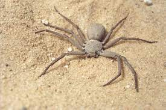

¿Qué función tienen las ARAÑAS DE TIERRA?
Comúnmente, las arañas de tierra viven debajo de piedras, hojas, troncos y otros objetos que están en el suelo. Este grupo de arañas normalmente es de un color rojo o pardo grisáceo, y pueden ser lisas o rayadas. No producen veneno que pueda dañar a los seres humanos.
